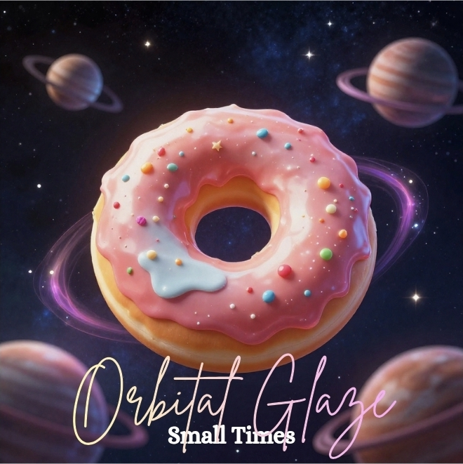
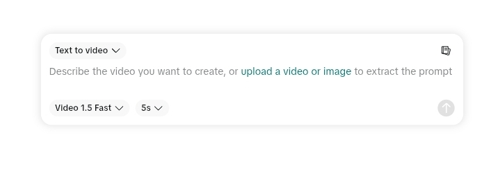
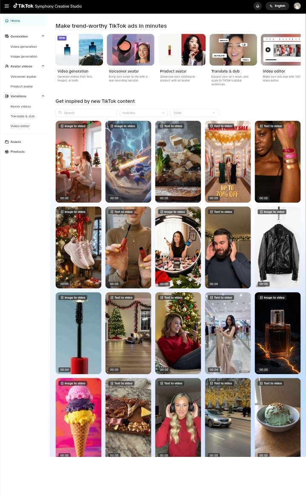
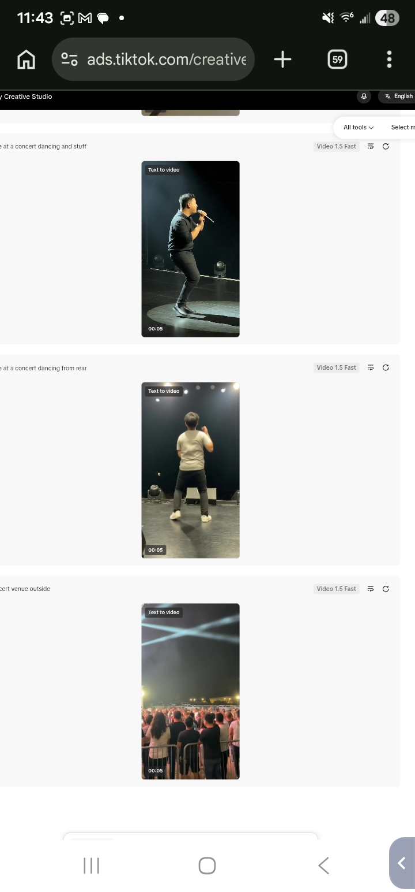
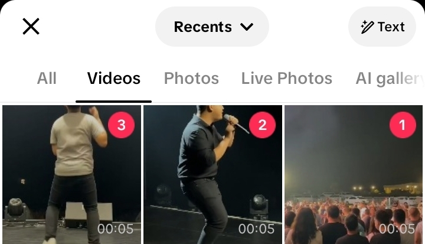
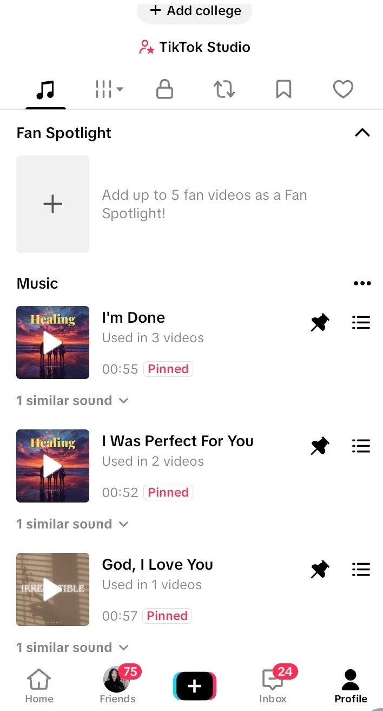
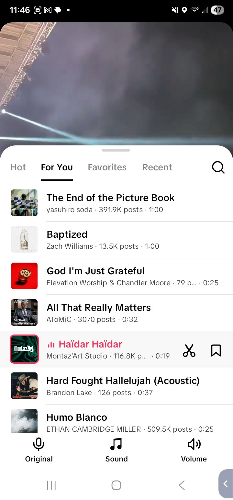
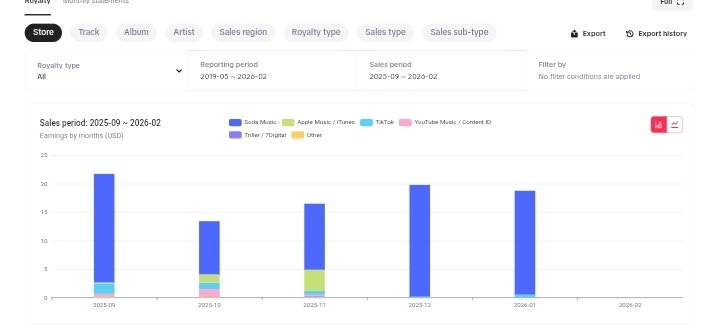
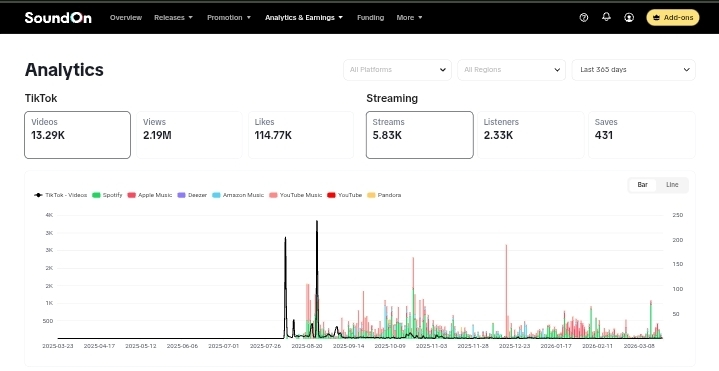
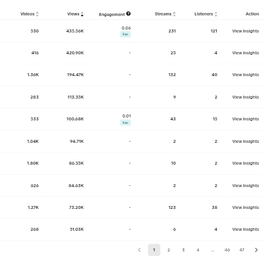

🔗Free Companion Toolkit:phil08533.github.io/SunoGuideArtist prompts · Metadata cleaner · AI tools · Free video creation
AI Music Money Blueprint
How to Turn Suno Songs Into Real Monthly Income Using SoundOn
Read This First
I'm not a record label. I'm not a famous artist.
I'm just someone who tested this system at scale.
Hundreds of songs uploaded
Multiple "artists" running at once
~$20/month with zero promotion
And yes… I got blocked once
Which is exactly why this guide exists — so you don't make the same mistakes.
What This Guide Will Do
By the end of this, you will know:
How to create songs with AI (fast)
How to write lyrics using AI tools
How to upload them to streaming platforms
How to avoid getting banned
How to scale into multiple artists
How to promote on TikTok, Instagram, YouTube, and Reddit
How to create free promo videos with no editing skills
How to handle copyright and legal basics
How to turn this into real income
Step 1 Get Set Up (DO THIS FIRST)
Sign Up for SoundOn
This is your distribution engine. SoundOn puts your music on:
Spotify
Apple Music
TikTok
Instagram
YouTube Music
Amazon Music
Deezer
And more
Important: Approval can take time. While you wait — start creating music immediately.
Set Up Spotify for Artists
Once your first song goes live on Spotify:
Go to artists.spotify.com and claim your artist profile
Add a bio, profile photo, and header image
Use the "Upcoming Release" feature to pitch songs to Spotify's editorial playlists (do this at least 7 days before release)
Check your analytics weekly — see which songs get saves, which playlists you land on
Why this matters: Spotify's algorithm recommends music based on saves, playlist adds, and listen-through rate. Claiming your profile and pitching releases is free and can land you on algorithmic playlists like Discover Weekly and Release Radar.
Alternative Distributors
Distributor
Cost
Notes
SoundOn
Free
Best for TikTok integration
DistroKid
$22.99/year
Unlimited uploads, fast delivery
TuneCore
$9.99/single
Per-release pricing
Amuse
Free tier
Slower delivery, limited features
Stick with SoundOn unless you have a specific reason to switch. The TikTok integration alone makes it worth it.
Step 2 Create Songs FAST (Don't Overthink This)
Use AI tools like Suno to generate songs.
Which Suno Tier?
Free or Pro ($10/mo) is fine. You can make over a hundred songs with the Pro model in a month. Premier ($30/mo) is nice but not necessary to start.
Simple vs Custom Mode
Use Custom mode for full control. This is where you enter your own lyrics and style tags.
How to Write Prompts
In the Lyrics box, use structure tags:
[Verse]
Your verse lyrics here
[Chorus]
Your chorus lyrics here
Only put in what you want sung. If you like a generated sound, reuse that prompt.
Dark cinematic villain arc, deep voice, powerful chorus
Keep it simple. Don't over-engineer.
Using AI to Write Better Lyrics
Don't write lyrics from scratch — use AI to help:
ChatGPT or Claude: Ask it to write lyrics in a specific style. Example: "Write a 2-verse, 1-chorus emotional breakup song. Female perspective. Short lines. Made for TikTok."
Iterate: If the first draft is close, ask it to revise specific lines
Steal structures: Find songs you like, feed the structure (not the words) to AI and ask for new lyrics in that format
Pro tip: Ask AI to write lyrics with a strong "hook line" in the first 5 seconds. That's what makes people stop scrolling on TikTok.
Song Length
Ideal length: 2–3 minutes. Streaming platforms count a "stream" after ~30 seconds. Shorter songs = more replays = more streams.
For TikTok clips: The hook needs to hit in the first 10–15 seconds. Front-load the emotion.
Suno tip: If a song generates at 4+ minutes, use the "Extend" feature to create shorter versions, or trim in Audacity / CapCut.
Hit Rate
You get a usable song almost every time you generate. They don't all have to sound great — quantity over quality at this stage.
High-Performing Song Types
Type
Why It Works
Sad / emotional songs
High relatability, gets shares
Relationship / breakup
Massive TikTok audience
"POV" style songs
Built for video content
Gym / motivation
Consistent niche demand
Dark / villain arc
Trending aesthetic
Step 3 Create Multiple Artists (This Is Key)
This is where most people mess up. Don't rely on one artist.
How Many Artists?
Start with: 2–3 artists
Scale to: 5–10 artists max
Too many = hard to manage. Too few = slow growth.
One Account, Multiple Artists
Use ONE SoundOn account and create multiple artists under it.
Easier management
Lower risk vs juggling accounts
Looks more legitimate
Give Each Artist an Identity
Artist
Style
Artist 1
Sad emotional / female vocal
Artist 2
Gym motivation / hype
Artist 3
Dark cinematic / deep voice
Naming Your Artists
Google the name first — make sure no real artist already uses it
Keep it short and memorable — 1–2 words max
Match the vibe — a dark cinematic artist shouldn't be named "Sunny Days"
Avoid special characters — stick to letters
Check Spotify/Apple Music — search the name before you commit
Step 4 Do NOT Get Banned
I learned this the hard way.
What Gets You Blocked
Uploading too many songs at once
Spamming bulk uploads
No consistency, just dumping content
Brand new account with instant bulk upload
What Happened When I Got Flagged
Upload access was restricted/blocked
No clear warning beforehand
Likely triggered by bulk behavior
Couldn't upload new tracks — account basically "frozen"
Recovery: Waited it out. Slowed down behavior after. Avoided repeating patterns.
Prevention > Recovery. This isn't always recoverable quickly.
Safe Upload Strategy
Per artist, per week:
Strategy
Cadence
Album approach
1 album per week, 8–12 songs per album
Singles approach
1–2 singles every 2–3 days
Safe weekly range
8–15 songs per artist
Ramp-up schedule for new accounts:
Week
Upload Volume
Week 1
Light — 1–3 songs total
Week 2+
Ramp to full album schedule
Slow = sustainable. Stay consistent, not explosive.
Vocal vs Instrumental Ratio
Instrumental/lofi gets flagged more often.
70–80% vocal tracks
20–30% instrumental
Instrumentals trigger higher spam/AI suspicion. Vocals are perceived as "real artist" content.
Step 5 Upload to SoundOn
Upload your track
Add title + artist name
Add simple cover art (3000×3000 px, JPG or PNG)
Submit
Songs Per Album
Sweet spot: 8–12 songs — Looks like a real album, not suspicious, enough content to generate streams.
Cover Art (Canva AI Workflow)
Canva has a built-in AI image generator — you don't need Midjourney or DALL-E for cover art.
Open Canva → Create custom size: 3000 × 3000 px
Go to Elements → type a prompt → click Generate
Canva's AI creates images from your prompt (e.g., "a donut in space", "neon city at night")
Pick the one you like and place it as your background
Go to Text → choose a font that matches your artist's vibe
Add your artist name in a stylish font
Add the album name underneath in a smaller, cleaner font
Download as PNG

Example cover art created with Canva AI — "Orbital Glaze: Small Times". A simple AI-generated image with artist name and album title in matching fonts.
Match the art style to the genre — dark moody art for dark artists, bright for pop
Keep text readable — don't let it blend into the background
Use the same font/color scheme across albums for one artist (brand consistency)
Canva's free tier includes the AI generator
Step 6 Titles Matter More Than Music
Think like content, not music. People click emotions.
"POV: You Finally Let Go"
"Late Night Drive Alone"
"No One Checks On You"
Best Days and Times to Release
Release day: Friday. Spotify's New Music Friday playlists update on Fridays.
Upload to SoundOn: At least 7–14 days before your target release date.
Posting content: Tuesday–Thursday evenings (6–9 PM in your audience's timezone).
Bad hashtags: #newmusic #indieartist #spotifyplaylist #unsigned (oversaturated, mostly used by other artists, not listeners)
The goal: Get in front of people who FEEL things, not people who make music.
Step 7 Promotion (This Is Where Money Grows)
Right now you can make money WITHOUT promotion… but promotion = scale.
TikTok Strategy
Post short clips of your song with emotional text overlay:
"POV: you gave them everything"
"This song hurts more than it should"
Content Loop:
Make song → Upload → Post clip → Repeat
Free Video Creation (No Editing Skills Needed)
TikTok's Creative Studio is a free AI video creation tool — no need to run ads, just a free account.
Create a free TikTok Ads account at ads.tiktok.com
Go to Creative Studio → Image/Text to Video
Upload an image or enter a text prompt
Generate a professional-looking video for free
Download and add your song as background audio

The TikTok Creative Studio text-to-video prompt — just describe the video you want and it generates it for free.

Browse templates and trending styles for inspiration before creating your own.

AI-generated concert videos from a simple text prompt — no editing skills needed.

Select your AI-generated videos from your camera roll and post directly to TikTok.
Where to post: TikTok · Instagram Reels · Facebook Reels · Reddit
Instagram Reels Strategy
Create a Reel using your song as background audio
Use the same emotional text overlay formula
Post consistently (3–5 Reels per week minimum)
Use Instagram's "Collab" feature to cross-promote between your artist accounts
Instagram advantage: Reels get pushed to non-followers via the Explore page. Instagram users tend to be older with more spending power (more likely to stream on Spotify/Apple Music).
YouTube Shorts
Create 15–60 second vertical videos with your song
Upload as a YouTube Short
Add your song title and artist name in the description
Link to your Spotify/Apple Music in your channel bio
YouTube Music streams generate royalties through SoundOn. Every Short is free promotion.
Reddit Promotion
Subreddits like r/PlaylistsSpotify, r/IndieMusicFeedback, and niche genre subs can drive real streams.
Don't spam. Engage genuinely in the community first.
Post your music with context ("just dropped this, looking for feedback")
Some subreddits have weekly self-promotion threads — use those
Setting Up Your Sound on TikTok

Your pinned sounds in TikTok Studio — showing songs distributed through SoundOn that are now available as TikTok sounds. Pin your best songs so they appear first on your profile.

The TikTok sound browser — this is where users discover trending sounds. Getting your song used in videos puts it in front of more people.
Upload music through SoundOn — distributed to TikTok automatically
Go to your TikTok profile → claim your artist page
Your sounds will be linked to your profile
When you post videos, use YOUR OWN sound as the audio
When others use your sound → more streams → more money
Tip: In every TikTok video caption, tell people to "use this sound" — encourages others to create videos with your music, driving more streams.
Step 8 How You Actually Get Paid
Streaming Revenue
Spotify + Apple Music pay per stream. Typical range: $15–$20/month per account with no promotion.

Monthly earnings from streaming platforms over 6 months. Revenue comes primarily from Spotify and Apple Music, with smaller amounts from TikTok, YouTube Music, and others. Typical range: $15–$20/month per account with no promotion.
TikTok Usage
If people use your sound → exposure increases → more streams.
SoundOn Payment Schedule
Payout: Monthly
Delay: Usually 30–60 days behind actual streams
Threshold: Low/accessible
Step 9 Scaling the System
Once something works: make more of THAT style, expand to more artists, stay consistent.

Analytics dashboard showing performance across multiple artists. TikTok videos, views, and streaming data across all platforms. This is what consistent uploading over several months produces.
Track-Level Performance

Individual track performance data showing videos created, views, streams, and listeners per song. Some songs significantly outperform others — double down on what works.
If You Run Ads ($50/month)
Scenario
Expected Return
Conservative
1.5x–2x (break-even to small profit)
Optimized
2x–5x if content hits
But: Ads only work if the song is good, the content is emotional, and the hook is strong. Ads amplify — they don't fix bad content.
Step 10 Legal and Copyright (Know the Rules)
AI Music Copyright — Where Things Stand
Suno Pro/Premier plans grant you commercial rights. The free tier does NOT — personal use only.
Lyrics you write (or have AI write) are your input. The melody and production are AI-generated.
Copyright law around AI music is still evolving. Most platforms accept AI-generated music without issue.
Do NOT claim you wrote/produced the music yourself in official copyright registrations.
What NOT to Do
Don't copy existing songs. Content ID systems can flag it.
Don't use real artist names in your Suno prompts.
Don't upload the same song under multiple artists. Platforms detect duplicate audio.
Don't use copyrighted images for cover art. Use AI-generated art or royalty-free images.
If You Get a Copyright Claim
Don't panic. Review the claim — sometimes they're automated and wrong.
If it's legit (sounds too close to something), pull the track and replace it.
If it's false, dispute it through the platform (Spotify for Artists, YouTube Studio, etc.)
Step 11 Metadata (Advanced Edge)
Suno files may include generation tags, internal metadata markers, and possible AI indicators.
Low volume users: Probably fine without cleaning
Scaling users: Safer to clean metadata
Not required, but recommended for scaling safely. Use the free in-browser cleaner at phil08533.github.io/SunoGuide
Reality Check
This is NOT instant money. But it IS:
Scalable
Repeatable
Low effort once the system is built
Total Earnings Estimate
At ~$15–$20/month over 6 months = roughly $90–$120 total.
Consistency starts showing results after 2–3 months as platforms index your music and songs stack over time.
30-Day Plan
Week 1
Sign up for SoundOn
Sign up for Suno (free or Pro)
Start making songs daily — aim for 5–10 per day
Create 2–3 artist identities (name + genre + vibe)
Google your artist names to make sure they're unique
Set up Canva for cover art
Week 2
Continue making songs — save your best ones
Build 1 album (8–12 songs) per artist
Create cover art for each album
Clean metadata on all tracks
Prepare uploads (titles, descriptions, art)
Week 3
Start uploading (slowly — follow the ramp-up schedule)
Claim your Spotify for Artists profile once first songs are live
Set up your SoundOn promo page for each artist
Create a TikTok account and start posting clips
Post 1–2 Reels on Instagram per artist
Week 4
Track what works (check Spotify for Artists + SoundOn analytics)
Double down on winning styles
Add more content — aim for 1 album per artist per week
Set up YouTube Shorts if you have bandwidth
Pitch your next release to Spotify editorial playlists (7+ days before release)
Start planning your second month's content calendar
When a Song Blows Up (What to Do)
If one of your songs starts getting traction (100+ streams/day, TikTok videos using your sound, playlist adds):
Double down immediately. Make more songs in that EXACT style. Same genre, same vibe, same prompt structure.
Release a follow-up within 1 week. Capitalize on momentum while the algorithm is pushing you.
Post more content with that song. 2–3 TikToks/Reels per day using that specific track.
Check where streams are coming from in Spotify for Artists. If it's a playlist, note which one.
Consider running ads ($5–$10/day on TikTok) specifically for that song while it has momentum.
Don't change what's working. This isn't the time to experiment with new genres.
A single viral song can generate months of passive income. One hit pays for everything.
BONUS: 10 Viral Song Ideas
POV: You finally move on
POV: They regret losing you
Gym: No excuses
Late night drive alone
You were never enough
Villain arc begins
Silent heartbreak
Trust broken
Alone but healing
They chose someone else
The Real Secret
Most people fail because:
They overcomplicate the music
They don't stay consistent
They never scale
You don't need talent. You need volume + consistency + strategy.
I made money doing this with no promotion and no audience.
If you actually push this… you'll outperform me fast.
🔗Free Companion Toolkit:phil08533.github.io/SunoGuideArtist prompts · Metadata cleaner · AI tools · Free video creation